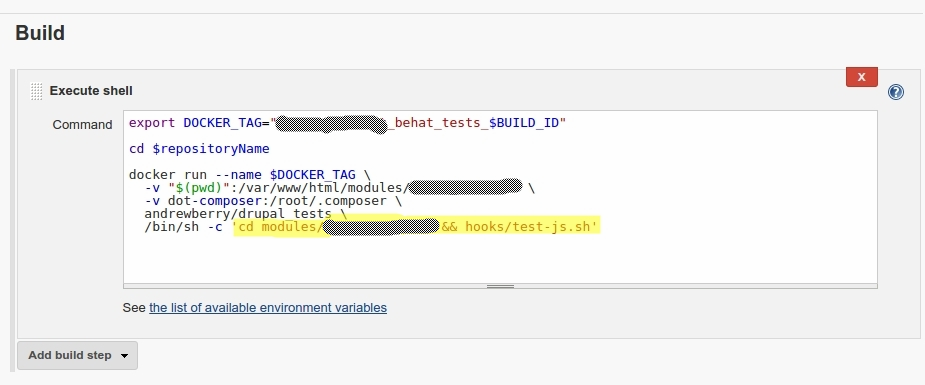
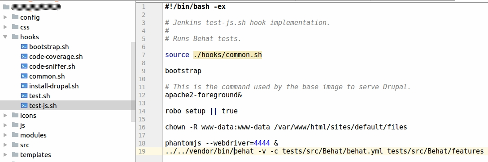
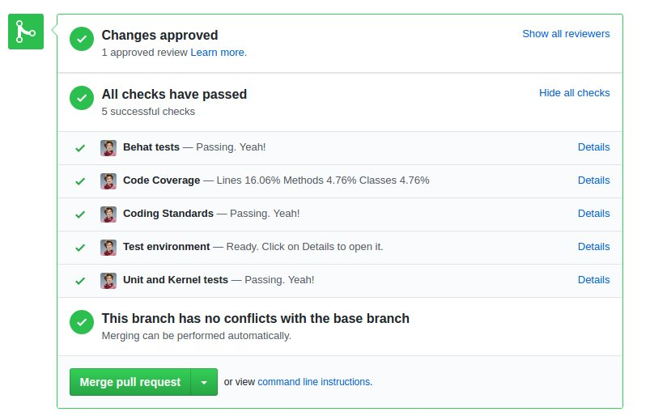
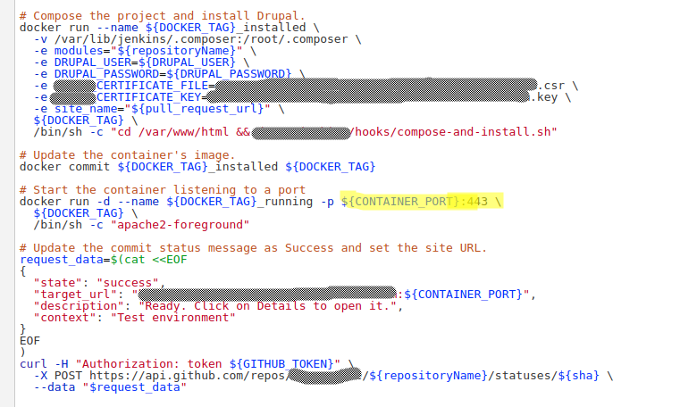
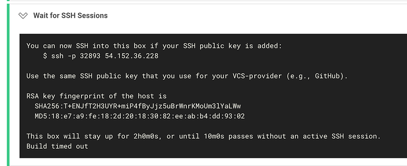
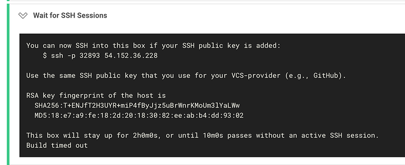
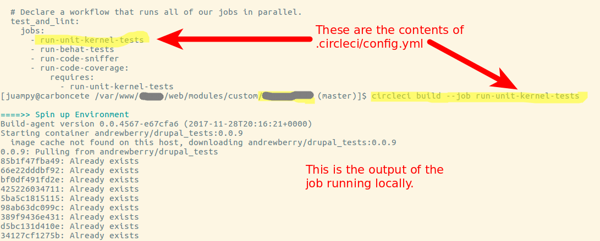

Continuous Integration has never been so easy
DrupalCon Nashville, April 2018
Continuous Integration enables your team to deliver more software, with higher quality, over a longer period of time. A successful CI implementation requires proper management of sprint, product, and financial risk.
What sort of Continuous Integration are we focusing in?
CI tools that we have tried
- Jenkins CI (on AWS and elsewhere)
- CircleCI
- Travis CI
Summary of our findings
- Start with CircleCI or Travis CI
- Travis CI requires further setup than Circle CI
- If you prefer to keep everything in-house, use Jenkins
Jenkins
Sample: shell step to run tests

Sample (2): script used to run tests

Setup
- Install Jenkins CI in a server
- Listen to repository changes with GitHub Pull Request Builder or Generic Webhook Trigger
- Allow Jenkins access to the repository
- Set up the job(s)
Pros: free and customisable
Install it, create the jobs, and adapt them to your team's workflow. It takes time, but you will end up with what you need
Pros: lots of documentation and plugins
Jenkins has been out there for a long time. It's hard to find a problem that is not solved via an article or a plugin.
Pros: temporary testing environments
Cons
- Lot of setup, tweaking, and server maintenance required
- It's tricky to keep the job implementation under version control
The big con: software is free, time isn't
- As a self-hosted option, we dive into a real case of the costs of maintaining CI tooling with Jenkins
Assumptions
- Eight developers
- 4 jobs per pull request, 18 minutes total CPU time
- 8 PRs / day, testing 24 total commits
- Team runs some tests locally, reducing CI load due to reworked tests
EC2 as a VPS
- Easiest to understand and setup
- The server is always there adding to your bills
- Activity spikes (like the end of a sprint)
- Autoscaling is a lie
| Instance | m4.2xlarge |
| Cores | 8 |
| Memory | 32GB |
| Cost | $0.40/hr |
| Monthly | $~288 |
| Memory / Job |
~512MB (composer update) |
| Concurrency |
Memory says ~48 jobs, but CPU limits hit first. ~10 in real world use due to other jobs. |
Engineering costs
Juampy spent:
- 116 hours over 15 months
- Time entries logged with keywords Jenkins, CI, or Continous (no migrations!)
- Literally hundreds to thousands of dollars per month
- Doesn't include client team hours which was all of the infrastructure and hosting
Knowledge pool
Your team presumably knows Drupal, JavaScript, programming. You might know Jenkins, but is it your job? What about after the initial setup?
The costs of hosting Jenkins are directly related to the expertise of your devops staff; you may pay more for a Jenkins expert than the hosting costs of an unoptimized architecture.
CircleCI
Sample
- checkout
- restore_cache: *restore_cache
- run:
name: Set up and run Unit and Kernel tests
command: |
apache2-foreground&
robo install:dependencies
robo setup:drupal || true
cp .circleci/config/phpunit.xml web/core/
mkdir -p artifacts/phpunit
chmod -R 777 artifacts
cd web
sudo -E -u www-data ../vendor/bin/phpunit -c core --debug --verbose --log-junit ../artifacts/phpunit/phpunit.xml modules/custom
- store_test_results:
path: /var/www/html/artifacts/phpunit
- store_artifacts:
path: /var/www/html/artifacts
- save_cache: *save_cache
Setup
- Add a .circleci/config.yml file to the repository
- Authenticate with your GitHub account at https://circleci.com
- Allow CircleCI to watch for repository changes to run jobs
Pros: parallel processing
Via workflows: split a job in several sub-jobs that run in parallel
Pros: docker-compose-style environments
## Defines images and working directory.
defaults: &defaults
docker:
- image: juampynr/drupal8ci:latest
- image: selenium/standalone-chrome-debug:3.7.1-beryllium
- image: mariadb:10.3
environment:
MYSQL_ALLOW_EMPTY_PASSWORD: 1
Pros: SSH access to a build's environment
 

Pros: Run jobs locally
Cons
- Not free! May not be suitable for teams with long, slow jobs, and many repositories
- Not able to customize commit messages to things like "3 unit tests tests failed"
Sample installation clip
Travis CI
Sample
language: php
dist: trusty
sudo: required
services:
- docker
php:
- 7.1
env:
global:
- DRUPAL_BASE_URL="http://127.0.0.1:8080"
matrix:
- JOB=job:check-coding-standards
- JOB=job:run-unit-tests
- JOB=job:run-behat-tests
before_install:
- echo 'sendmail_path = /bin/true' >> ~/.phpenv/versions/$(phpenv version-name)/etc/conf.d/travis.ini
install:
- composer --verbose install
before_script:
- cp .travis/RoboFile.php .
script:
- vendor/bin/robo $JOB
after_success:
- test $JOB = "job:run-unit-tests" && travis_retry php vendor/bin/php-coveralls -v
Setup
- Add a .travis.yml file to the repository
- Authenticate with your GitHub account at https://travis-ci.org
- Allow Travis CI to watch for repository changes to run jobs
Pros: tons of documentation
On top of the official documentation, there are a lot of private and open source projects that use Travis CI so it's relatively easy to find tutorials and examples.
Cons
- Coverage reports require a third party service like Coveralls
- Supports Docker but needs extra setup
- No CLI, even though if you use
docker-composeyou can run the build locally
Sample
But at what cost?
Developers
"Tests are too hard"
QA
"We don't trust the tests"
Project Managers
"We will spend more time on tests than fixing bugs"
Product Owners
"We need to deliver"
Let's review our goals
- Are we ready to release?
- Is our product improving?
- Are we creating value, or keeping the lights on?
Code and it's consequences
Six months or six years?
Cappuccino or a Latte?
Are you continuously stretching your code base to be larger, or refining and replacing the same code, over and over?
Ease of updates
Can you easily deploy updates, or is software being distributed to far-flung teams?
Environmental Conditions
Where is your code running? One site and environment, or many?
QA Planning
Regression testing is the biggest pain point. Developers as QA can be a great model.
Developers
"Tests are too hard"
Tests are tools and APIs that teach you the underlying systems.
QA
"We don't trust the tests"
If you have a dedicated QA team, they need to be completely integrated with development.
Project Managers
"We will spend more time on tests than fixing bugs"
Be tactical about what to test. Trust your developers. Track your hours.
Product Owners
"We need to deliver"
Continuous integration is an answer to the need for continuous delivery.
Talking Points
- The testing cycle will be shortened (delivery)
- QA can focus on writing new test cases, not testing existing ones (quality)
- Code can be ignored and revitalized (longevity)
- Initial setup for a project ranges from 1 hour to 1 week (sprint risk)
- Our technical project managers will have trustworthy metrics to share (product risk)
- The monthly costs are small and flexible (financial risk)
Underlying Context
- Emphasize team efficiency
- Trust in the tools and don't override them
- Always be improving, especially for existing code bases
Conclusion
- Start with CircleCI or Travis CI. Their free tier should be enough to start with most projects.
- CircleCI and Travis CI can do the same, but Travis CI requires further setup.
- If you need to upgrade, compare the costs with how long would it take you to set up and maintain the infrastructure in Jenkins.